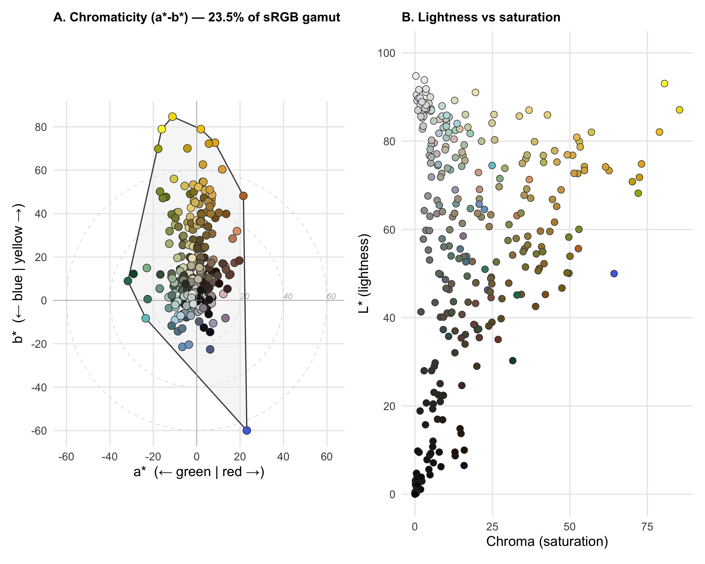

CIELAB convex hull from pavo::classify cluster centers
Tip
Foundation Recipe — every group runs this one. The output is a single number (gamut volume) plus a 2-panel CIELAB figure showing where the clade lives in perceptual color space: the a*–b* chromaticity diagram and the L* lightness distribution.
What you’re computing
CIELAB (also called L*a*b*) is a perceptually uniform color space designed to match human vision. Distances in CIELAB correspond to perceived color differences — a 10-unit step anywhere in the space looks like roughly the same amount of change. This makes it the standard choice for quantifying color diversity from photographic data (Endler & Mielke, 2005).
The three axes are:
Axis
Range
Meaning
Biological connection
L*
0 (black) – 100 (white)
Lightness
Luminance channel — the achromatic signal
a*
negative (green) – positive (red)
Red–green opponency
Corresponds to the L-minus-M cone opponency channel students learned about in lecture
b*
negative (blue) – positive (yellow)
Yellow–blue opponency
Corresponds to the S-minus-(L+M) cone opponency channel
Two derived quantities are useful:
Chroma = \(\sqrt{a^{*2} + b^{*2}}\) — how vivid/saturated the color is. Zero chroma = pure gray. High chroma = intensely colored.
The a*–b* plane is a natural chromaticity diagram: hue is the angle from the origin and chroma (saturation) is the distance from the origin. Collapsing L* onto this plane separates lightness from chromatic content, which matters enormously for clades like butterflyfishes where the black bars vs. white body axis dominates the raw RGB cloud.
Gamut volume in CIELAB = the 3D convex hull of all species’ cluster centers — the total color diversity of the clade measured in perceptually meaningful units.
For each exemplar species:
pavo::classify(img, kcols = k) quantizes the image into k perceptual color clusters (one of those clusters is the background).
We pull the cluster centers out as RGB triples (the per-species “palette”).
We drop the background cluster (recorded in bg_class_id from the pavo adjacency CSV).
We convert each RGB triple to CIELAB via the colorspace package (sRGB → XYZ → L*a*b*, assuming D65 illuminant).
Pool all surviving cluster centers across the clade → a cloud of points in CIELAB space.
Gamut volume = 3D convex hull of that cloud (via geometry::convhulln), expressed as a percentage of the sRGB gamut mapped into CIELAB.
Warning: package 'ggplot2' was built under R version 4.5.2
Warning: package 'tibble' was built under R version 4.5.2
Warning: package 'tidyr' was built under R version 4.5.2
Warning: package 'purrr' was built under R version 4.5.2
Warning: package 'dplyr' was built under R version 4.5.2
BUNDLE <-"../../bundle"# Per-species annotation: gestalt_k (used for classify) and bg_class_id# (cluster index to treat as background). In a real student workflow, you# would build this file by inspecting your classified images.ann <-read.csv(file.path(BUNDLE, "species_k_bg.csv"),stringsAsFactors =FALSE)bg <-setNames(ann$bg_class_id, ann$species_dir)
The pavo classify step
# === Canonical recipe call — RUN ONCE, then comment out ===# This takes ~10-15 minutes on a Mac mini for 130 species.# After it completes, the saveRDS line below caches the result so the# rest of the recipe (and every re-render) runs in seconds.classified <-vector("list", nrow(ann))names(classified) <- ann$speciesfor (i inseq_len(nrow(ann))) { png <-file.path(BUNDLE, "images", paste0(ann$species_dir[i], ".png")) img <- pavo::getimg(png)set.seed(20260526) # stable cluster IDs across knits classified[[i]] <- pavo::classify(img, kcols = ann$gestalt_k[i])}saveRDS(classified, file.path(BUNDLE, "pavo_classify.rds"))
# Cached object produced by the chunk above (live call commented out).classified <-readRDS(file.path(BUNDLE, "pavo_classify.rds"))cat(sprintf("Loaded %d classified images from cache.\n", length(classified)))
Loaded 130 classified images from cache.
Extract cluster centers (drop background)
get_palette <-function(rimg_obj, bg_id) { rgb_mat <-attr(rimg_obj, "classRGB") # k × 3 matrixif (is.null(rgb_mat)) return(NULL)if (!is.na(bg_id) && bg_id >=1&& bg_id <=nrow(rgb_mat)) { rgb_mat <- rgb_mat[-bg_id, , drop =FALSE] } rgb_mat}palettes <-mapply(function(rimg_obj, sp) { p <-get_palette(rimg_obj, bg[gsub(" ", "_", sp)])if (is.null(p)) return(NULL)data.frame(species = sp, R = p[, "R"], G = p[, "G"], B = p[, "B"]) }, classified, names(classified),SIMPLIFY =FALSE)palettes <-bind_rows(palettes)cat(sprintf("Palette cloud: %d cluster centers from %d species\n",nrow(palettes), length(unique(palettes$species))))
Palette cloud: 341 cluster centers from 130 species
head(palettes)
species R G B
1 Amphichaetodon howensis 0.712462918 0.791139840 0.68843002
2 Amphichaetodon howensis 0.157093400 0.223932093 0.21390473
3 Amphichaetodon melbae 0.002662411 0.003529652 0.00456698
4 Amphichaetodon melbae 0.497675267 0.542690550 0.47387326
5 Amphichaetodon melbae 0.611291468 0.727787100 0.76582796
6 Chaetodon adiergastos 0.466961379 0.486782086 0.11507019
# Clade gamut: 3D convex hull in L*a*b* spacehull_lab <-convhulln(lab_pts, options ="FA")vol_lab <- hull_lab$vol# Reference volume: the sRGB gamut boundary mapped into CIELAB.# We sample the sRGB cube on a fine grid and compute its convex hull in LAB.srgb_grid <-expand.grid(R =seq(0, 1, by =0.05),G =seq(0, 1, by =0.05),B =seq(0, 1, by =0.05))ref_srgb <- colorspace::sRGB(srgb_grid$R, srgb_grid$G, srgb_grid$B)ref_lab <- colorspace::coords(as(ref_srgb, "LAB"))hull_ref <-convhulln(ref_lab, options ="FA")vol_ref <- hull_ref$voloccupancy_lab <- vol_lab / vol_refcat(sprintf("Chaetodontidae CIELAB gamut volume: %.0f cubic CIELAB units\n", vol_lab))
Chaetodontidae CIELAB gamut volume: 211537 cubic CIELAB units
cat(sprintf("sRGB reference volume in CIELAB: %.0f cubic CIELAB units\n", vol_ref))
sRGB reference volume in CIELAB: 900793 cubic CIELAB units
cat(sprintf("Occupancy: %.1f%% of achievable sRGB gamut\n", 100* occupancy_lab))
Occupancy: 23.5% of achievable sRGB gamut
Hero figure — CIELAB chromaticity diagram + lightness distribution
The a*–b* chromaticity diagram (Panel A) shows every cluster center projected onto the red–green and yellow–blue opponent axes. Each point is colored by its actual RGB value. The convex hull outlines the clade’s achieved chromatic range. Concentric circles at chroma = 20, 40, 60 mark saturation levels — points near the center are desaturated (gray), points far from the center are vivid. The L* histogram (Panel B) shows the lightness distribution separately.
# Build the plotting data frameplot_df <-data.frame(species = palettes$species,L = palettes$L,a = palettes$a,b = palettes$b,chroma = palettes$chroma,hue_deg = palettes$hue_deg,hex =rgb(pts_rgb[, "R"], pts_rgb[, "G"], pts_rgb[, "B"]))# 2D convex hull on a*-b* planehull_ab_idx <- grDevices::chull(plot_df$a, plot_df$b)hull_ab_idx <-c(hull_ab_idx, hull_ab_idx[1])hull_ab_df <- plot_df[hull_ab_idx, ]# Concentric chroma circles for referencecircle_df <-do.call(rbind, lapply(c(20, 40, 60), function(r) { theta <-seq(0, 2* pi, length.out =100)data.frame(a = r *cos(theta), b = r *sin(theta), radius = r)}))# Panel A: a* vs b* chromaticity diagramp_ab <-ggplot(plot_df, aes(x = a, y = b)) +# Chroma reference circlesgeom_path(data = circle_df, aes(x = a, y = b, group = radius),colour ="grey85", linewidth =0.3, linetype ="dashed") +# Label the chroma circlesannotate("text", x =22, y =2, label ="20", colour ="grey70",size =3, fontface ="italic") +annotate("text", x =42, y =2, label ="40", colour ="grey70",size =3, fontface ="italic") +annotate("text", x =62, y =2, label ="60", colour ="grey70",size =3, fontface ="italic") +# Convex hull polygongeom_polygon(data = hull_ab_df, fill ="grey92", colour ="grey30",linewidth =0.6, alpha =0.4) +# Origin crosshairs (neutral gray)geom_hline(yintercept =0, colour ="grey70", linewidth =0.3) +geom_vline(xintercept =0, colour ="grey70", linewidth =0.3) +# Data pointsgeom_point(aes(fill = hex), shape =21, size =3.5,colour ="grey20", stroke =0.4) +scale_fill_identity() +# Origin markerannotate("point", x =0, y =0, shape =3, size =3, colour ="grey50") +coord_equal() +scale_x_continuous(breaks =seq(-60, 80, by =20)) +scale_y_continuous(breaks =seq(-80, 80, by =20)) +labs(x =expression(paste(a, "* ", " (\u2190 green | red \u2192)")),y =expression(paste(b, "* ", " (\u2190 blue | yellow \u2192)")),title =sprintf("A. Chromaticity (a*-b*) — %.1f%% of sRGB gamut",100* occupancy_lab)) +theme_minimal(base_size =14) +theme(panel.grid.minor =element_blank(),plot.title =element_text(size =13, face ="bold"))# Panel B: L* vs chroma scatterp_Lc <-ggplot(plot_df, aes(x = chroma, y = L)) +geom_point(aes(fill = hex), shape =21, size =3,colour ="grey20", stroke =0.4) +scale_fill_identity() +scale_y_continuous(limits =c(0, 100), breaks =seq(0, 100, by =20)) +labs(x ="Chroma (saturation)",y =expression(paste(L, "* (lightness)")),title ="B. Lightness vs saturation") +theme_minimal(base_size =14) +theme(panel.grid.minor =element_blank(),plot.title =element_text(size =13, face ="bold"))# Combine: Panel A takes ~70%, Panel B takes ~30%p_ab + p_Lc +plot_layout(widths =c(1, 1))

CIELAB color gamut of Chaetodontidae. Panel A: a-b chromaticity diagram showing chromatic diversity. Each point is a foreground cluster center from one species, colored by its actual RGB value. Gray polygon = 2D convex hull. Concentric circles mark chroma (saturation) levels. Panel B: L* (lightness) vs chroma scatter showing the joint distribution of lightness and saturation.
Hull vertices: 27 points on hull surface (of 341 total)
cat(sprintf("CIELAB gamut volume: %.0f (%.1f%% of sRGB gamut in CIELAB)\n", vol_lab, 100* occupancy_lab))
CIELAB gamut volume: 211537 (23.5% of sRGB gamut in CIELAB)
How to interpret this figure
What you see
What it means
Points clustered near the origin
Desaturated, grayish colors (low chroma)
Points far from the origin
Vivid, saturated colors (high chroma)
Points in one quadrant only
Clade dominated by that color category (e.g., +a*/+b* = warm reds/yellows)
Points spread across multiple quadrants
High chromatic diversity — the clade makes many different hue categories
Wide L* range in Panel B
Large lightness contrast (e.g., black bars + white body)
Narrow L* range in Panel B
Species are similar in brightness, variation is mostly chromatic
Large gamut volume
Clade realizes a wide range of perceptually distinct colors
Small gamut volume
Clade converges on a restricted palette
Compare your clade’s gamut percentage to the butterflyfish benchmark: Chaetodontidae occupies 23.5% of the achievable sRGB gamut in CIELAB.
Per-species gamut sizes
The same convex hull can be computed within a single species’ CIELAB palette as a measure of that species’ chromatic range.
sp_gamuts <- palettes %>%group_by(species) %>%filter(n() >=4) %>%# need 4+ non-bg clusters for 3D hullsummarise(n_clust =n(),vol =tryCatch(convhulln(cbind(L, a, b), options ="FA")$vol,error =function(e) NA_real_ ),mean_chroma =mean(chroma),L_range =max(L) -min(L),.groups ="drop" ) %>%arrange(desc(vol))cat(sprintf("Per-species gamut volumes available for %d species (those with k>=5):\n",nrow(sp_gamuts)))
Per-species gamut volumes available for 15 species (those with k>=5):
ggplot(sp_gamuts, aes(vol)) +geom_histogram(bins =24, fill ="#1f77b4", colour ="grey90") +labs(x ="Per-species gamut volume (CIELAB cubic units)",y ="Number of species") +theme_minimal(base_size =20)
Distribution of per-species CIELAB gamut volume. Most species occupy a small chunk of the clade-level gamut; a handful are surprisingly chromatically broad.
Per-species color extremes
Which species push the clade’s gamut boundary?
# Species with the most extreme a*, b*, and L* valuesextremes <-list(`Most red (+a*)`= palettes[which.max(palettes$a), c("species", "a", "b", "L")],`Most green (-a*)`= palettes[which.min(palettes$a), c("species", "a", "b", "L")],`Most yellow (+b*)`= palettes[which.max(palettes$b), c("species", "a", "b", "L")],`Most blue (-b*)`= palettes[which.min(palettes$b), c("species", "a", "b", "L")],`Brightest (L*)`= palettes[which.max(palettes$L), c("species", "a", "b", "L")],`Darkest (L*)`= palettes[which.min(palettes$L), c("species", "a", "b", "L")],`Highest chroma`= palettes[which.max(palettes$chroma), c("species", "a", "b", "L")],`Widest gamut`=if (nrow(sp_gamuts) >0) {data.frame(species = sp_gamuts$species[1],a =NA, b =NA, L =NA) } else { NULL })extremes_df <-do.call(rbind, extremes)extremes_df$category <-names(extremes)knitr::kable(extremes_df[, c("category", "species", "L", "a", "b")],digits =1, row.names =FALSE,caption ="Species at the extremes of the CIELAB gamut.")
Species at the extremes of the CIELAB gamut.
category
species
L
a
b
Most red (+a*)
Prognathodes carlhubbsi
50.0
23.1
-60.0
Most green (-a*)
Roa jayakari
45.1
-31.7
8.9
Most yellow (+b*)
Chaetodon austriacus
87.1
-11.2
84.7
Most blue (-b*)
Prognathodes carlhubbsi
50.0
23.1
-60.0
Brightest (L*)
Heniochus diphreutes
94.8
0.0
0.3
Darkest (L*)
Prognathodes obliquus
0.0
0.0
0.0
Highest chroma
Chaetodon austriacus
87.1
-11.2
84.7
Widest gamut
Prognathodes carlhubbsi
NA
NA
NA
Takeaways
Clade-level gamut volume for Chaetodontidae is 211537 cubic CIELAB units, which is 23.5% of the achievable sRGB gamut.
The a*–b* chromaticity diagram shows where the clade’s chromatic diversity lies: butterflyfishes cluster strongly in the +a*/+b* (warm yellow–orange–red) quadrant, reflecting the dominance of carotenoid-derived body colors. Extensions toward -a*/+b* (greenish yellows) appear in some species, and the origin region reflects the dark melanin bars.
The L* vs chroma scatter reveals a bimodal lightness distribution: bright whites and pale yellows at high L*, dark blacks at low L*, with vivid saturated colors at intermediate lightness. This is the classic high-contrast butterflyfish pattern.
Per-species volumes vary widely — most species have small chromatic ranges (one body color + bar color + accent), but the maximally chromatic species push out the clade-level hull.
Reproducibility note
The classify step uses set.seed(20260526) before each k-means call so the cluster IDs are stable across knits. The sRGB → CIELAB conversion is deterministic (no randomness). If you re-run on a different machine or with a different pavo version, expect the cluster IDs to permute (e.g., cluster 2 ↔︎ cluster 3) — this is harmless for the gamut (we use cluster colors, not IDs) but matters for the background filter, which is why we read bg_class_id from the saved pavo CSV rather than recomputing it.
The sRGB → CIELAB conversion assumes a D65 illuminant and standard sRGB display gamma (IEC 61966-2-1). This is appropriate for photographs taken with consumer cameras and stored as sRGB JPEG/PNG.
Hero PDF for the poster
Warning in grid.Call.graphics(C_text, as.graphicsAnnot(x$label), x$x, x$y, :
for ' (← blue | yellow →)' in 'mbcsToSbcs': <- substituted for ← (U+2190)
Warning in grid.Call.graphics(C_text, as.graphicsAnnot(x$label), x$x, x$y, :
for ' (← blue | yellow →)' in 'mbcsToSbcs': -> substituted for → (U+2192)
Warning in grid.Call.graphics(C_text, as.graphicsAnnot(x$label), x$x, x$y, :
for ' (← green | red →)' in 'mbcsToSbcs': <- substituted for ← (U+2190)
Warning in grid.Call.graphics(C_text, as.graphicsAnnot(x$label), x$x, x$y, :
for ' (← green | red →)' in 'mbcsToSbcs': -> substituted for → (U+2192)
Warning in grid.Call.graphics(C_text, as.graphicsAnnot(x$label), x$x, x$y, :
for 'A. Chromaticity (a*-b*) — 23.5% of sRGB gamut' in 'mbcsToSbcs': -
substituted for — (U+2014)
The classic Stoddard & Prum (2011) visualization places cluster centers in the raw RGB cube. This is harder to interpret biologically (the axes confound luminance with chromaticity) but is visually striking and lets you compare directly to older literature.
Stoddard-style 3D RGB gamut. Wireframe = the sRGB unit cube.
Note
Why CIELAB is preferred over RGB for the poster: In the RGB cube, a straight line from black (0,0,0) to white (1,1,1) changes all three channels simultaneously — making it impossible to separate luminance variation from hue variation. A clade like Chaetodontidae (mostly yellow + black + white) produces an elongated cigar along the luminance diagonal, exaggerating apparent chromatic breadth. The CIELAB a*–b* plane separates lightness from chromaticity, giving a truthful view of hue diversity.